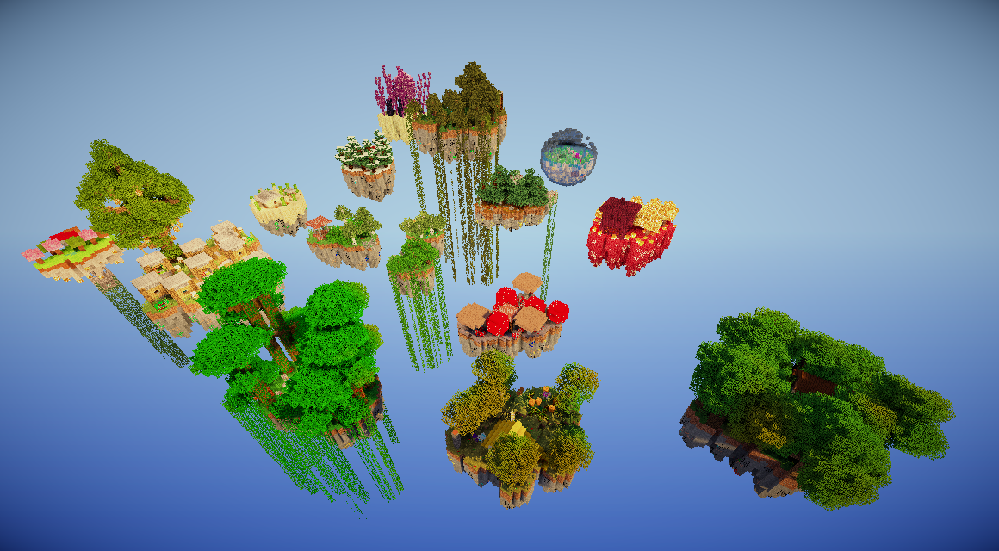

Harness

增站內部分享會 2026
按 → 開始

把話說對
怎麼一次說到位
ChatGPT、Midjourney
把資訊給對
RAG、記憶、工具定義
GPT-4o、Claude 3.5
AI 自主拆解任務
你說目標，它想方法
Claude Code、Cursor
建系統讓 AI 跑
流程、容錯、多 Agent 協作
CLAUDE.md、MCP、Skills
定義：具備「自主性」的 AI 系統。它不再只是等你問、它答，而是會根據目標「自我拆解步驟」。
思維轉變：從「給我一個答案」變成「幫我達成一個目標」。
關鍵能力：推理 (Reasoning) + 規劃 (Planning) + 自我修正 (Self-Correction)。
Discord
Line
Telegram
龍蝦
Claude Code
Claude
Gemini
GPT


只要想像的出來就能實現
那為什麼「不要用」？

做一次，讓整個團隊都能用
 Skill
你的需求
Skill
你的需求
讓知識不只活在某個人腦子裡
program.md — 你寫研究方向prepare.py — 固定的評估基建train.py — AI 自己修改實驗program.mdevolution/program.mdprepare.pyscripts/evaluate.shtrain.pydocs/**/*.mdevolution/INDEX.md讓系統自己變好


Q & A